把听不懂的那几分钟
留住
老师有口音、板书擦得太快、一走神就断线——落字不解决讲课质量， 它只负责让你没跟上的那一段，课后还能捡回来。
装完之后像本地软件一样常驻，没网也能记。数据全部存在你自己的设备上。
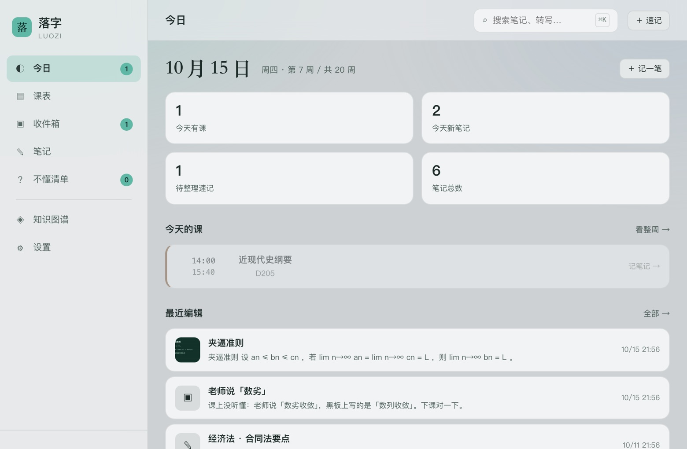
一节课 90 分钟，真正卡住你的可能只有三个地方
不是不会学，是当场没接上。而笔记软件大多在解决"整理"，不解决"接上"。
老师说「数劣」，你以为是新概念
低头抄两行，抬头换了一屏
课上听懂了，课后翻笔记一脸空白
拍板书，顺便把字抠出来
相册里堆三百张板书照片，和没拍一样。落字把每张图直接挂在那节课的笔记下面， 压到 1600px，能看清又不占地方。
- 现拍和从相册上传是同一个按钮，一次可以选多张；电脑上就是普通选文件
- 拍完 自动压缩，一张板书图约 15KB，不心疼存储
- 点图上的「取字」，在本机把图上文字识出来，直接并进正文
- 识别引擎和中文模型都在本地，不走任何服务器
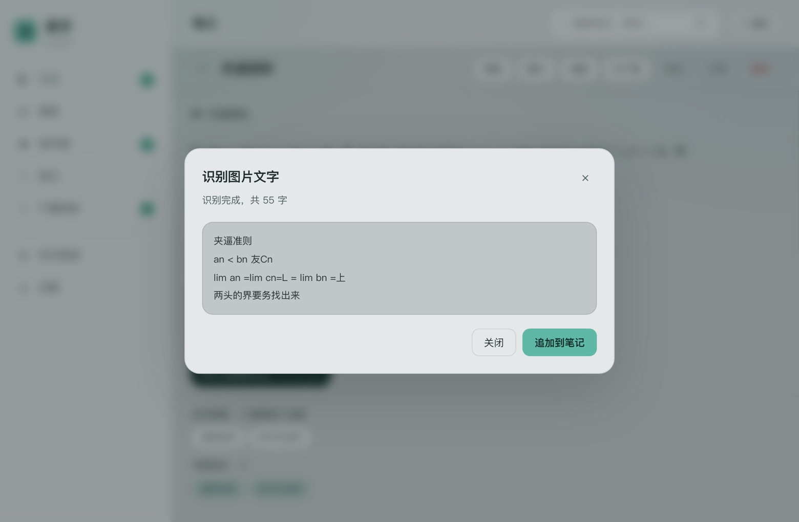
PPT 和 PDF 丢进来，一页一个小标题
老师的课件在群文件里躺了一学期也没打开过。把整份课件拖进来， 它在你的浏览器里把文字抽出来，一张幻灯片一个小标题，正文已经排好了。
- 认 .pptx 和 .pdf，单份 20MB 以内，整份文件不上传
- 中文 PDF 也抽得出，不是只认英文；公式框架的文字照样进正文
- 图片版 PDF 会老实告诉你「这是扫描件、没文字层」，再让你逐页识别
- 原文件挂在附件里，想对格式随时翻原版
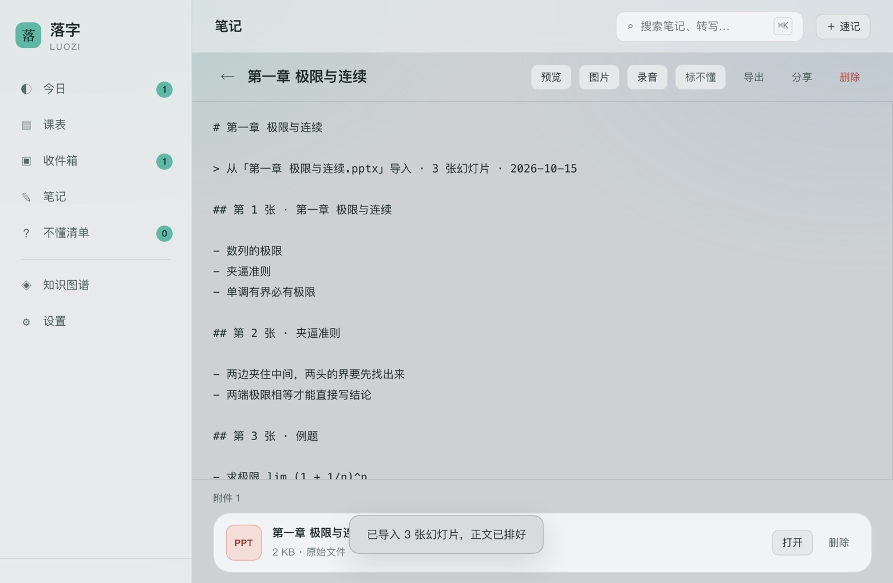
只录听不懂的那一段
整节课录下来，你也不会听第二遍。听到卡住的地方按一下，录三十秒， 回来再听那几句就够了。
- 录音带实时波形，一眼看出有没有录进去
- 存成 opus，一分钟不到 0.5MB
- 可以转成文字贴在笔记里：用浏览器内置识别，或你自己的 Whisper 接口
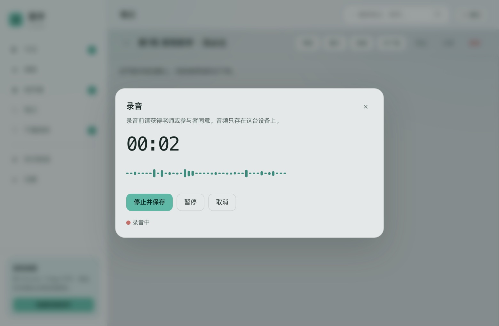
贴一段文字，或者直接传张截图
教务系统那种表格截图，不用手动敲。丢进来，它在本机把课程、星期、时间、教室拆出来， 先给你核对，确认了才写进课表。
- 认「周一 08:30-10:00 高等数学 A301」，也认「第 3-4 节」
- 截图识别也是本地的，表头自动跳过，认不准的行会单独列出来
- 课表按周次算，今天第几周、接下来是哪节课，直接摆在今日页
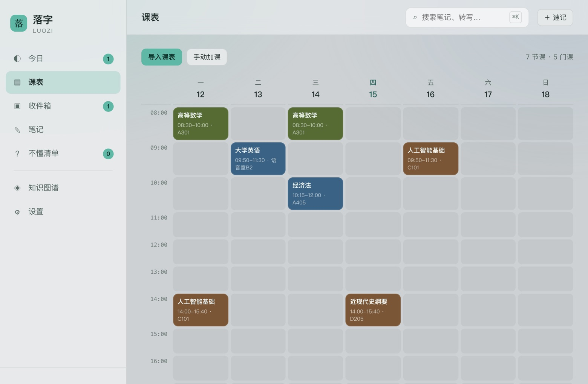
公式能真排版，笔记之间能串起来
左边写 Markdown，右边立刻出效果。$a_n \le b_n \le c_n$
这种会排成真正的数学式，不是一行源码。
- 写 [[另一篇的名字]] 就串起来了，那篇笔记里会自动多一条反向链接
- 公式、引用、任务列表、代码块都支持，不用联网加载
- 同一篇笔记可以挂图片和录音，都在这一个页面里
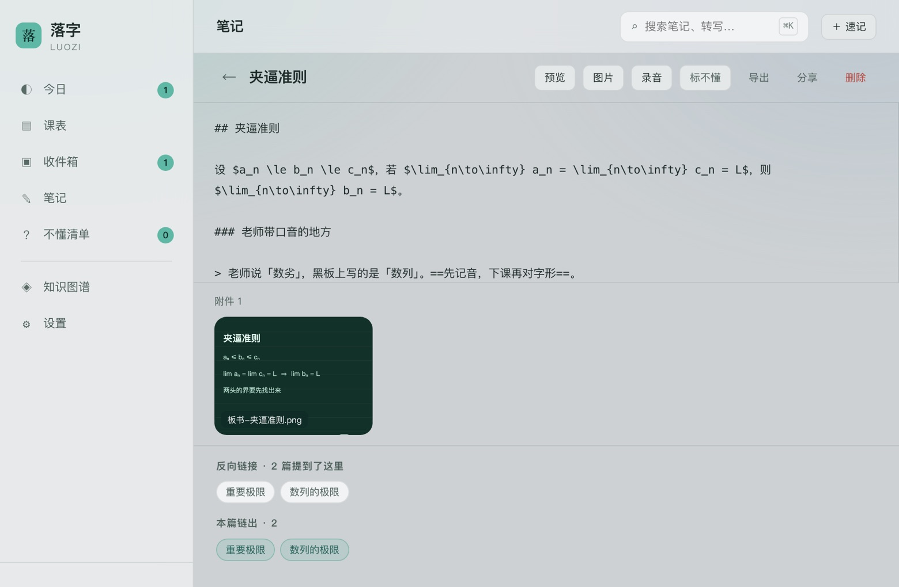
没懂的那句，当场圈出来
下课那一秒你是知道哪里没懂的，第二天就忘了。在笔记里选中那几个字，点一下「标不懂」， 它立刻变黄，同时收进不懂清单，攒着等人问、等自己回头查。
- 选中一段点「标不懂」→ 包成
==高亮==，预览里直接发黄 - 清单按笔记分组，连着上下文片段一起列出来，不用回头再找
- 弄明白了点「弄懂了」，它从清单里消失，黄色高亮留着——这地方曾经绊过你
- 没清完会在今日页和侧栏挂着数字，不会烂在列表深处
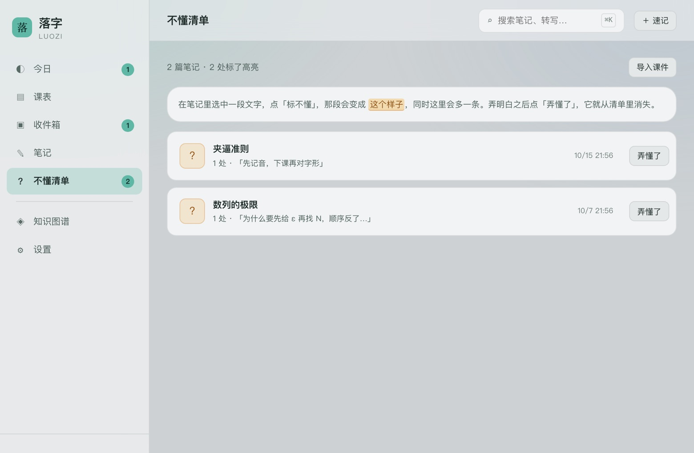
找得到，比记得住更要紧
期末复习的时候，你只记得「老师讲过那个夹来夹去的东西」。 搜「夹逼」，两篇笔记立刻出来，按相关度排好。
- 全文搜索，标题命中权重更高，还带上下文片段
- 汉字之间多打空格也不影响，粘贴的转写稿照样能搜
- 知识图谱把互相引用的笔记连成网，哪篇是孤岛一眼看到
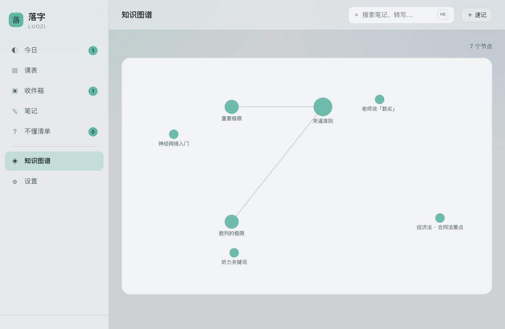
发个链接，对方只看这一篇
课上没记全的，找同学对一下。生成一段链接发过去，对方打开只有这篇的内容， 不会看到你的其他笔记。
- 对方可以选择存进自己的落字，也可以只看不存
- 内容压在链接里，不经过服务器
- 公式、双链、格式一起带过去
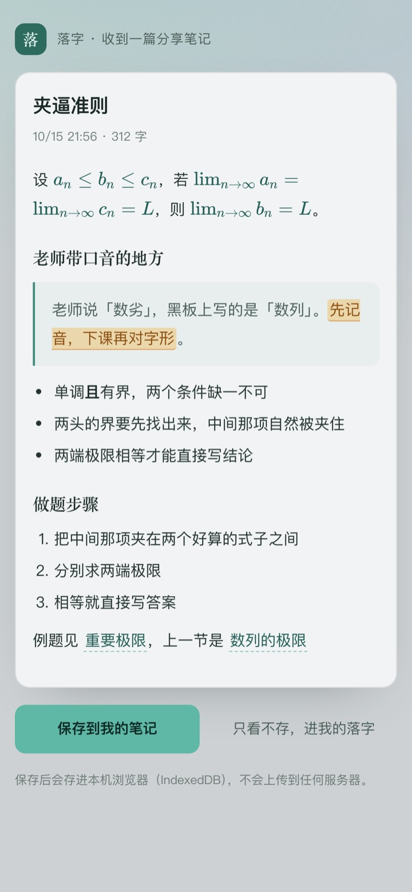
手机上也能用，装到主屏就是一个 App
上课只带手机的话，拍照、录音、翻课表都在手机上完成，回宿舍再接着写。
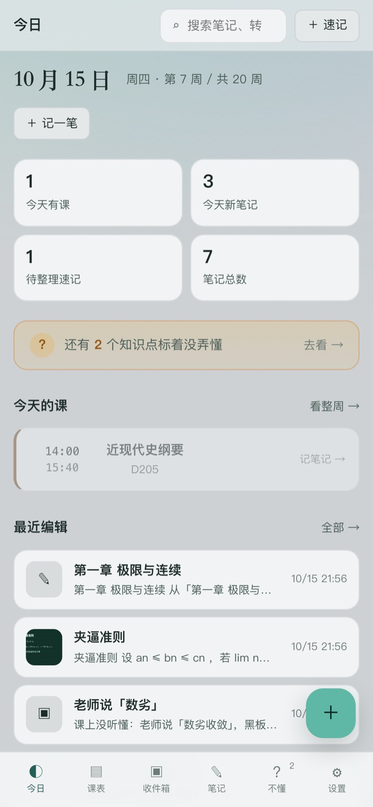
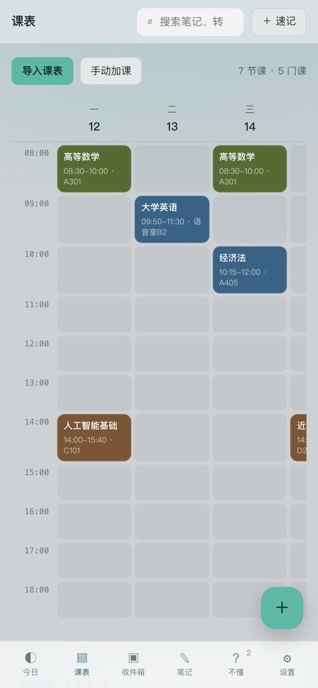
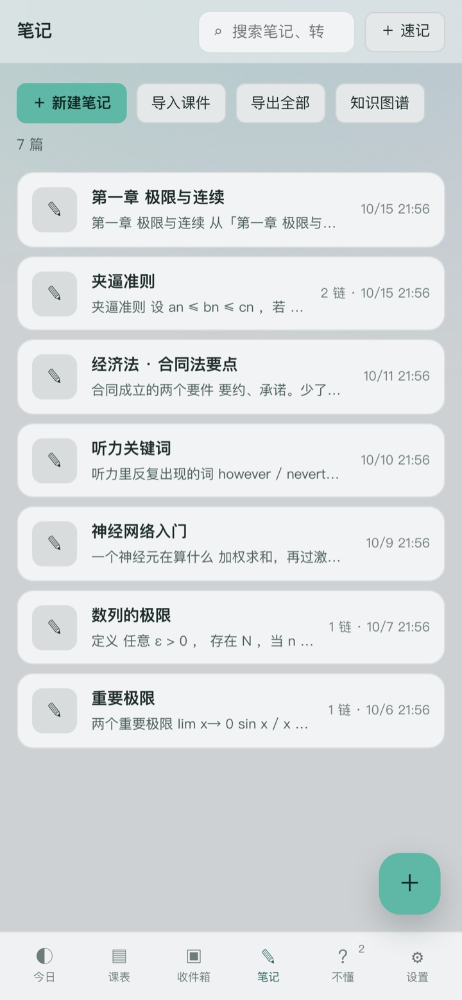
四条它守着的规矩
课堂笔记是私人的东西，不该成为别人的数据。
1不用注册
打开就能用。没有账号、没有验证码、没有"绑定手机号才能导出"。
2不上传
笔记、图片、录音、课件全存在浏览器的 IndexedDB 里。导入的 PPT 和 PDF 是在浏览器里就地解开的，整份文件不会离开这台设备。
3能离线
装到桌面后，飞行模式也能打开、也能记。OCR、公式渲染、课件解析都在本地跑。
4能带走
随时导出 ZIP（图片、转写原文都在里面）或 JSON 备份，换设备用备份恢复，不锁数据。
把它装到桌面上
落字是个 PWA，不需要去应用商店，也不用下载安装包。 装完是一个独立窗口，跟普通软件一样从程序坞或主屏点开。
- 点这一页的「装到桌面」
- 浏览器弹出安装框，点「安装」
- 从程序坞 / 开始菜单打开
- 用 Safari 打开这一页
- 点底部分享按钮
- 选「添加到主屏幕」
- 打开这一页
- 点右上角三个点
- 选「安装应用」或「添加到主屏幕」
装不上的话，直接用网页版就行，功能一模一样。 Mac 上的 Safari 和 Firefox 不支持安装 PWA，点「不装，直接开始用」； 要装成桌面图标请用 Chrome 或 Edge。在微信里打开这一页的话，点右上角「…」→「在浏览器中打开」，再点安装按钮。